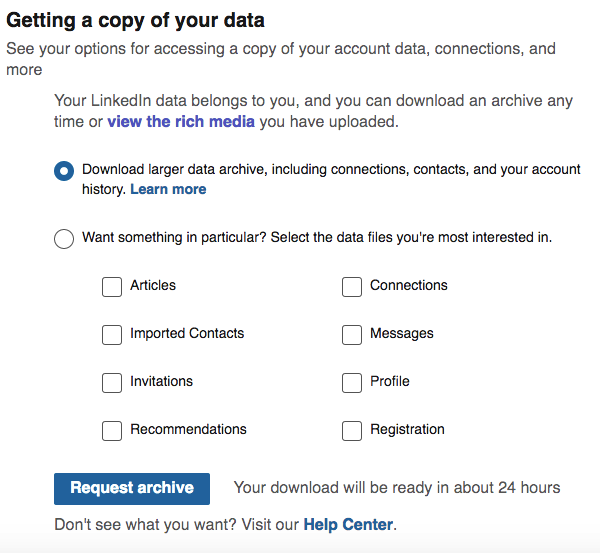

The idea for this project arose after having realized how our Linkedin connections are at the same time different and similar. Therefore, we thought that building a network graph and performing a deep analysis on the data we gathered would have been useful to analyze this situation better.
The first thing to do was collecting our data. How? We discovered that LinkedIn provides a very useful feature, allowing its users to download several CSV files containing all the data related to their account, including connections, contact, history and more.

After waiting 24 hours, LinkedIn provided us with all our data. In succession, we looked for a way to display this data in an interactive graph, and we found what we were looking for thanks to a tool called Flourish.
Our LinkedIn Social Network
Flourish is a tool allowing users to display and visualize their data. We uploaded and customized the CSV files that LinkedIn provided us and we obtained the following result:
The blue points positioned in the center are Davide and Katarina, the main points from which the analysis develops.
All the other points represent our contacts, and they are categorized according to their occupation/position. As one can see, our contacts are devoted to many different professions, and our shared contacts belong to Bologna's University.
Statistical analysis
Professions
The first analysis allowed us to see that our contacts' main occupation is being students:
By analyzing them, we measured that 55,6% attents Bologna's University. Another big part of the graph is taken by Verona's University students, but they are not shared contacts.
In succession, we analyzed our top 5 professions' connections, i.e. the most spread occupations of our contacts. We first analyzed them individually, and then we found the most popular professions by combining our networks.
Davide and Katarina's shared contacts are 20. All of them belong to Bologna's University.
Provenance
Our analysis highlited that Davide's contacts are mostly Italians, whereas Katarina's are spread in different parts of the world.
Conclusions
This project is meant to offer visualization of the mapping and measuring of relationships and flows between people from two different Linkedin networks. The nodes of each of the networks are the people while the links show relationships or flows between the nodes. The specificity of this project is that two Linkedin networks used for the analysis belong to two people from different countries and therefore backgrounds. Hence, the analysis revealed various interesting facts, such as how many shared contacts can have two people from different countries, and how many of them have the same profession. Besides, there is also a noticeable contrast between the provenance of the contacts from both networks. This project's main goal is therefore to explicitly demonstrate how, by using Linedin networks, one can conduct and extract various statistical information, especially when having diverse networks as a base.